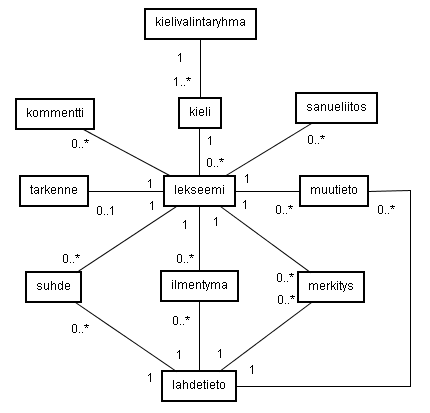
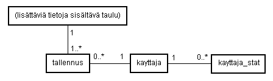

2.2. TAULUESITTELYT
KIELI-taulu
Kieli-taulu esittää kieliä, joihin voi kuulua lekseemejä ja sanueita.
CREATE TABLE kieli (
id INT NOT NULL AUTO_INCREMENT,
jarjestys INT NOT NULL,
nimi VARCHAR(100) CHARACTER SET utf8 NOT NULL,
lyhenne VARCHAR(20) CHARACTER SET utf8 NOT NULL,
kieliryhma INT NOT NULL,
valintaryhma INT NOT NULL,
PRIMARY KEY (id));
Attribuuttien selitys:
id INT NOT NULL AUTO_INCREMENT
Kielen yksikäsitteistävä id-numero.
jarjestys INT NOT NULL
Kielen järjestysnumero kieliryhmän sisällä.
nimi VARCHAR(100) NOT NULL
Kielen nimi.
kieliryhma INT NOT NULL
0 = jos kyseessä normaali kieli, 1 = jos kyseessä kieliryhmä
valintaryhma INT NOT NULL
Kielivalintaryhmä, johon ko. kieli kuuluu. Järjestelmän kielivalikon
valinnaiset kielet esitetään sen mukaan mikä kielivalintaryhmä on valittu.
Tämä liittyy kielivalintaryhma-tauluun.
Kieli-taulu esittää kieliä, joihin voi kuulua lekseemejä ja sanueita.
KIELIVALINTARYHMA-taulu
CREATE TABLE kielivalintaryhma (
id INT NOT NULL,
jarjestys INT NOT NULL,
nimi VARCHAR(100) CHARACTER SET utf8 NOT NULL,
kielijoukko INT NOT NULL,
PRIMARY KEY(id));
Attribuuttien selitys:
id INT NOT NULL AUTO_INCREMENT
Kielivalintaryhmän yksikäsitteistävä id-numero.
jarjestys INT NOT NULL
Kielivalintaryhmän järjestysnumero kielijoukon sisällä..
nimi VARCHAR(100) CHARACTER SET utf8 NOT NULL
Kieli-taulun kielen id, johon ko. lekseemi kuuluu.
kielijoukko INT NOT NULL
Kielijoukko, johon kielivalintaryhmä kuuluu. 1 = ieur, 2 = ural, 3 = muu.
Kielivalintaryhmät, joihin varsinaiset kielet (kieli-taulu) kuuluvat.
Käytetään mm. muodostamaan hakutoiminnon kielivalikot.
LEKSEEMI-taulu
CREATE TABLE lekseemi (
id INT UNSIGNED NOT NULL AUTO_INCREMENT,
kieli_id INT UNSIGNED NOT NULL,
PRIMARY KEY (id),
INDEX kieli_id_index (kieli_id));
Attribuuttien selitys:
id INT UNSIGNED NOT NULL AUTO_INCREMENT
Lekseemin yksikäsitteistävä id-numero.
kieli_id INT UNSIGNED NOT NULL
Kieli-taulun kielen id, johon ko. lekseemi kuuluu.
Lekseemi-taulu on tietokannan ydin. Taulu määrittää lekseemin,
sanan, johon voi kuulua lisää muuta tietoa muista tauluista id:n mukaan
liitettynä. Lekseemi kuuluu aina johonkin kieleen. Muuta tietoa lekseemi
ei yksistään oletusarvoisesti sisällä. Tämän katsottiin olevan järkevä
ratkaisu, jotta lekseemiin voidaan tarvittaessa liittää vain ja ainoastaan
tarvittavaa tietoa. Lekseemi koostuu kokonaisuudessaan tarkenteesta,
ilmentymistä, merkityksistä, suhteista toisiin lekseemeihin ja ns. muusta
tiedosta.
TARKENNE-taulu
CREATE TABLE tarkenne (
id INT UNSIGNED NOT NULL AUTO_INCREMENT,
lekseemi_id INT UNSIGNED NOT NULL,
tarkenne VARCHAR(80) CHARACTER SET utf8,
varmennettu INT,
PRIMARY KEY (id));
Attribuuttien selitys:
id INT UNSIGNED NOT NULL AUTO_INCREMENT
Tarkenteen yksikäsitteistävä id-numero.
lekseemi_id INT UNSIGNED NOT NULL
Lekseemin id, johon ko. tarkenne kuuluu.
tarkenne VARCHAR(80) CHARACTER SET utf8
Tarkenneteksti.
varmennettu INT
Tieto onko tarkenne varmennettu. 0 = ei, 1 = kyllä.
Tarkenteella lekseemin yhteyteen lisätään tarkempi tieto kieleen liittyen
jos kyse on esim. jostain murteesta.
ILMENTYMA-taulu
CREATE TABLE ilmentyma (
id INT UNSIGNED NOT NULL AUTO_INCREMENT,
lekseemi_id INT UNSIGNED NOT NULL,
ortognro INT NOT NULL,
ilmentyma VARCHAR(100) CHARACTER SET utf8,
ilmentyma_p VARCHAR(100) CHARACTER SET utf8
homonyymi_id INT,
numero VARCHAR(20) CHARACTER SET utf8,
varmennettu INT,
aakk INT UNSIGNED
PRIMARY KEY (id),
INDEX lid_index (lekseemi_id));
Attribuuttien selitys:
id INT UNSIGNED NOT NULL AUTO_INCREMENT
Ilmentymän yksikäsitteistävä id-numero.
lekseemi_id INT UNSIGNED NOT NULL
Lekseemin id, johon ko. ilmentyma kuuluu.
ortognro INT NOT NULL
Ilmentymän ortografianumero. Ilmentymiä on sekä päälähteenmukaisia että
lähteenmukaisia. Päälähteitä on enintään 3 kpl kieltä kohden ja kullekin
päälähteelle on olemassa yksi päälähteen mukainen ilmentymä lekseemiä
kohden. ortognro-attribuutin arvot 1, 2 ja 4 tarkoittavat päälähteen
mukaista ilmentymää. Lisäksi lekseemillä voi olla useita lähteenmukaisia
ilmentymiä, jotka esitetään ortognro-attribuutin arvolla 3. Epälooginen
järjestys johtuu myöhemmin tehdystä kolmannen päälähteen lisäyksestä.
ilmentyma VARCHAR(100) CHARACTER SET utf8
Ilmentyma, eli sanan kirjoitusasu merkkijonona
ilmentyma_p VARCHAR(100) CHARACTER SET utf8
Ilmentyman pelkistetty muoto, jossa joitain merkkejä on poistettu.
homonyymi_id INT
Ilmentymän homonyymi-indeksi.
numero VARCHAR(20) CHARACTER SET utf8
Ilmentymän numeroarvoinen ilmentymä. Numeroarvoa voidaan käyttää joko
varsinaisen ilmentymän sijaan tai myös sen rinnalla. Myös numeroarvolla
haetaan ilmentymiä. Numeroarvo on merkkijono, koska se sisältää
mahdollisesti pisteitä tai kaksoispisteitä.
varmennettu INT
Tieto onko ilmentyma varmennettu. 0 = ei, 1 = kyllä.
Ilmentyma-taululla esitetään lekseemien ortografioiden formatiivien
ilmentymät.
MERKITYS-taulu
CREATE TABLE merkitys (
id INT UNSIGNED NOT NULL AUTO_INCREMENT,
lekseemi_id INT UNSIGNED NOT NULL,
ortognro INT NOT NULL,
kieli VARCHAR(50) NOT NULL,
merkitys TEXT CHARACTER SET utf8 NOT NULL,
varmennettu INT,
PRIMARY KEY (id),
INDEX lid_index (lekseemi_id));
Attribuuttien selitys:
id INT UNSIGNED NOT NULL AUTO_INCREMENT
Merkityksen yksikäsitteistävä id-numero.
lekseemi_id INT UNSIGNED NOT NULL
Lekseemin id, johon ko. merkitys kuuluu.
ortognro INT NOT NULL
Kuvaa mihin ortografiaan merkitys liittyy. Merkityksiä on sekä
päälähteenmukaisia että lähteenmukaisia. Päälähteitä on 2 kpl kieltä
kohden ja kullekin päälähteelle on olemassa yksi päälähteen mukainen
merkitys lekseemiä kohden. ortognro-attribuutin arvot 1, 2 ja 4 tarkoittavat
päälähteen mukaista ilmentymää. Lisäksi lekseemillä voi olla useita
lähteenmukaisia merkityksiä, jotka esitetään ortognro-attribuutin arvolla 3.
Epälooginen järjestys johtuu myöhemmin tehdystä kolmannen päälähteen
lisäyksestä.
kieli VARCHAR(50) NOT NULL
Merkityksen kieli.
merkitys TEXT CHARACTER SET utf8 NOT NULL
Merkityks merkkijonona.
varmennettu INT
Onko merkitys varmennettu. 0 = ei, 1 = kyllä.
Merkitys esittää lekseemin sanallisen merkityksen. Merkityksen tietoihin
kuuluu tieto kielestä, jolla se on esitetty. Merkityksiä voi kuulua
lekseemin useita (ks ortognro-attribuutti).
SUHDE-taulu
CREATE TABLE suhde (
id INT UNSIGNED NOT NULL AUTO_INCREMENT,
lekseemi1_id INT UNSIGNED NOT NULL,
suhdetyyppi INT NOT NULL,
lekseemi2_id INT UNSIGNED NOT NULL,
varmuusaste INT NOT NULL,
implisiittinen INT NOT NULL,
varmennettu INT,
PRIMARY KEY (id),
INDEX st_index (suhdetyyppi));
Attribuuttien selitys:
id INT UNSIGNED NOT NULL AUTO_INCREMENT
Suhteen yksikäsitteistävä id-numero.
lekseemi1_id INT UNSIGNED NOT NULL
Suhteen yhden pään lekseemin id. Ks lekseemi2_id.
suhdetyyppi INT NOT NULL
Suhdetyypin määrittelevä numero.
Suhdetyypit:
1 = vastinesuhde
2 = johtosuhde
3 = lainasuhde
5 = vertaussuhde
6 = kielteinen vastinesuhde
7 = kielteinen johtosuhde
8 = kieleinen lainasuhde
10 = kielteinen vertaussuhde
Tyypit 4 ja 9 puuttuvat, koska niillä aikanaan esitetty korrelaatiosuhde
on poistettu käytöstä.
lekseemi2_id INT UNSIGNED NOT NULL
Suhteen yhden pään lekseemin id. Ks lekseemi1_id.
varmuusaste INT NOT NULL
Suhteen varmuusaste. 1 = varma, 2 = epävarma.
implisiittinen INT NOT NULL
Onko suhde implisiittinen, eli päätelty. 1 = on 0 = ei.
Suhteet (vastine- ja johtosuhteet) päätellään aina suhteen lisäyksen
yhteydessä. Päätellyt suhteet tallennetaan kantaan, koska näin
käyttöliittymästä saadaan nopeampi. Suhteiden päättely joka vaiheessa
osoittautui turhan hitaaksi. Suhteen implisiittisyys voitaisiin selvittää
myös lähdetiedoista (päätellyllä ei ole lähdettä), mutta tämäkin
aiheuttaisi turhia tietokantaoperaatioita käyttöliittymässä
varmennettu INT
Onko suhde varmennettu. 0 = ei, 1 = kyllä.
Suhde on konkreettisesti suhde kahden eri lekseemin välillä. Se yhdistää
kaksi lekseemiä attribuuttien lekseemi1_id ja lekseemi2_id mukaan
suhdetyypin määrittelemään suhteeseen. Suhteet toimivat yleensä
molemminsuuntaisesti lekseemien välillä.
Vastine- ja johtosuhteiden osalta järjestelmässä suoritetaan ko. suhteiden
lisäyksen aikana päättelyä. Lekseemistä lähtevän suhdeverkon
transitiivisuus selvitetään ja lisätään implisiittiset suhteet niiden
lekseemien väliin, joista suhde transitiivisuuden mukaan puuttuu.
MUUTIETO-taulu
CREATE TABLE muutieto (
id INT UNSIGNED NOT NULL AUTO_INCREMENT,
lekseemi_id INT UNSIGNED NOT NULL,
tieto VARCHAR(255) CHARACTER SET utf8,
varmennettu INT,
PRIMARY KEY (id));
Attribuuttien selitys:
id INT UNSIGNED NOT NULL AUTO_INCREMENT
Muun tiedon yksikäsitteistävä id-numero.
lekseemi_id INT UNSIGNED NOT NULL
Lekseemin id, johon muu tieto liittyy.
tieto VARCHAR(255) CHARACTER SET utf8
Muun tiedon teksti merkkijonona.
varmennettu INT
Onko muu tieto varmennettu. 0 = ei, 1 = kyllä.
Muu tieto esittää lekseemin jotain muuta tietoa, jota ei muulla tavalla
voida esittää.
SANUE-taulu
CREATE TABLE sanue (
id INT UNSIGNED NOT NULL AUTO_INCREMENT,
kieli_id INT UNSIGNED NOT NULL,
eduslekseemi INT UNSIGNED NOT NULL,
PRIMARY KEY (id));
Attribuuttien selitys:
id INT NOT NULL AUTO_INCREMENT
Sanueen yksikäsitteistävä id.
kieli_id INT UNSIGNED NOT NULL
Sanueen kieli. Viittaa kieli-tauluun.
eduslekseemi INT UNSIGNED NOT NULL
Sanueen eduslekseemi, jonka mukaan sanueelle tulee ilmentymä. Viittaa
lekseemi-tauluun.
Sanue on lekseemiin verrattava kokonaisuus. Taulu määrittää sanueen, johon
voi kuulua lisää muuta tietoa muista tauluista id:n mukaan
liitettynä. Sanue kuuluu aina johonkin kieleen. Muuta tietoa sanue
ei yksistään oletusarvoisesti sisällä. Sanue koostuu kokonaisuudessaan
tarkenteesta, ilmentymistä, merkityksistä, suhteista toisiin sanueisiin ja
ns. muusta tiedosta.
SANUELIITOS-taulu
CREATE TABLE sanueliitos (
id INT UNSIGNED NOT NULL AUTO_INCREMENT,
lekseemi_id INT UNSIGNED NOT NULL,
sanue_id INT UNSIGNED NOT NULL,
PRIMARY KEY (id));
Attribuuttien selitys:
id INT UNSIGNED NOT NULL AUTO_INCREMENT
Sanueliitoksen id.
lekseemi_id INT UNSIGNED NOT NULL
Sanueeseen liittyvä lekseemi. Viittaa lekseemi-tauluun.
sanue_id INT UNSIGNED NOT NULL
Mihin sanueeseen lekseemi_id:n viittaama lekseemi kuuluu.
Taulu esittää sanueisiin kuuluvat lekseemit.
SANUE_ILMENTYMA-taulu
CREATE TABLE sanue_ilmentyma (
id INT UNSIGNED NOT NULL AUTO_INCREMENT,
sanue_id INT UNSIGNED NOT NULL,
ilmentyma VARCHAR(255) CHARACTER SET utf8,
varmennettu INT,
PRIMARY KEY (id));
Attribuuttien selitys:
id INT UNSIGNED NOT NULL AUTO_INCREMENT
Ilmentymän yksikäsitteistävä id-numero.
sanue_id INT UNSIGNED NOT NULL
Sanue id, johon ko. ilmentyma kuuluu. Viittaa sanue-tauluun.
ilmentyma VARCHAR(255) CHARACTER SET utf8
Ilmentyma, eli sanan kirjoitusasu merkkijonona
varmennettu INT
Tieto onko ilmentyma varmennettu. 0 = ei, 1 = kyllä.
Sanue_ilmentyma-taulussa esitetään sanueiden lähteenmukaiset ilmentymät.
SANUE_MERKITYS-taulu
CREATE TABLE sanue_merkitys (
id INT UNSIGNED NOT NULL AUTO_INCREMENT,
sanue_id INT UNSIGNED NOT NULL,
kieli VARCHAR(50) NOT NULL,
merkitys TEXT CHARACTER SET utf8,
toimittaja INT,
varmennettu INT,
PRIMARY KEY (id));
Attribuuttien selitys:
id INT UNSIGNED NOT NULL
AUTO_INCREMENT
Merkityksen yksikäsitteistävä id-numero.
lekseemi_id INT UNSIGNED NOT NULL
Lekseemin id, johon ko. merkitys kuuluu.
ortognro INT NOT NULL
Kuvaa mihin ortografiaan merkitys liittyy. Merkityksiä on sekä
päälähteenmukaisia että lähteenmukaisia. Päälähteitä on 2 kpl kieltä
kohden ja kullekin päälähteelle on olemassa yksi päälähteen mukainen
merkitys lekseemiä kohden. ortognro-attribuutin arvot 1 ja 2 tarkoittavat
päälähteen mukaista merkitystä. Lisäksi lekseemillä voi olla useita
lähteenmukaisia merkityksiä, jotka esitetään ortognro-attribuutin arvolla
3.
kieli VARCHAR(50) NOT NULL
Merkityksen kieli.
merkitys TEXT CHARACTER SET utf8
Merkityks merkkijonona.
varmennettu INT
Onko merkitys varmennettu. 0 = ei, 1 = kyllä.
Merkitys esittää sanueen sanallisen merkityksen. Merkityksen tietoihin
kuuluu tieto kielestä, jolla se on esitetty.
SANUE_SUHDE-taulu
CREATE TABLE sanue_suhde (
id INT UNSIGNED NOT NULL AUTO_INCREMENT,
sanue1_id INT UNSIGNED NOT NULL,
suhdetyyppi INT NOT NULL,
sanue2_id INT UNSIGNED NOT NULL,
lainakieli INT NOT NULL DEFAULT 0,
varmuusaste INT NOT NULL,
implisiittinen INT NOT NULL,
varmennettu INT,
PRIMARY KEY (id),
INDEX st_index (suhdetyyppi));
Attribuuttien selitys:
id INT UNSIGNED NOT NULL AUTO_INCREMENT
Suhteen yksikäsitteistävä id-numero.
sanue1_id INT UNSIGNED NOT NULL
Suhteen yhden pään sanueen id. Ks sanue2_id.
suhdetyyppi INT NOT NULL
Suhdetyypin määrittelevä numero.
Suhdetyypit:
1 = vastinesuhde
3 = lainasuhde
5 = vertaussuhde
6 = kielteinen vastinesuhde
8 = kieleinen lainasuhde
10 = kielteinen vertaussuhde
Tyypit samat kuin lekseemin suhde-taulussa. Sanueilla ei käytössä
johtosuhdetta.
sanue2_id INT UNSIGNED NOT NULL
Suhteen yhden pään sanueen id. Ks sanue1_id.
lainakieli INT NOT NULL DEFAULT 0
Lainasuhteen lainakieliryhmä.
varmuusaste INT NOT NULL
Suhteen varmuusaste. 1 = varma, 2 = epävarma.
implisiittinen INT NOT NULL
Onko suhde implisiittinen, eli päätelty. 1 = on 0 = ei.
Suhteet (vastine) päätellään aina suhteen lisäyksen
yhteydessä. Päätellyt suhteet tallennetaan kantaan, koska näin
käyttöliittymästä saadaan nopeampi. Suhteiden päättely joka vaiheessa
osoittautui turhan hitaaksi. Suhteen implisiittisyys voitaisiin selvittää
myös lähdetiedoista (päätellyllä ei ole lähdettä), mutta tämäkin
aiheuttaisi turhia tietokantaoperaatioita käyttöliittymässä
varmennettu INT
Onko suhde varmennettu. 0 = ei, 1 = kyllä.
Suhde on konkreettisesti suhde kahden eri sanueen välillä. Se yhdistää
kaksi sanuetta attribuuttien sanue1_id ja sanue2_id mukaan
suhdetyypin määrittelemään suhteeseen. Suhteet toimivat yleensä
molemminsuuntaisesti sanueiden välillä.
Vastinesuhteiden osalta järjestelmässä suoritetaan ko. suhteiden
lisäyksen aikana päättelyä. Sanueesta lähtevän suhdeverkon
transitiivisuus selvitetään ja lisätään implisiittiset suhteet niiden
sanueiden väliin, joista suhde transitiivisuuden mukaan puuttuu.
LAINALAAJENNUS-taulu
CREATE TABLE lainalaajennus (
suhde_id INT UNSIGNED NOT NULL,
sanue_id INT UNSIGNED NOT NULL,
PRIMARY KEY(suhde_id,sanue_id));
Attribuuttien selitys:
suhde_id INT UNSIGNED NOT NULL
Suhteen id-numero, jota lainalaajennus koskee.
sanue_id INT UNSIGNED NOT NULL
Sanueen id, jota lainalaajennus koskee.
Lainalaajennus-taulussa esitetään lainasuhteiden laajennukset, eli
lainasuhteeseen lainatahoon liittyvät sanueet.
SANUE_MUUTIETO-taulu
CREATE TABLE sanue_muutieto (
id INT UNSIGNED NOT NULL AUTO_INCREMENT,
sanue_id INT UNSIGNED NOT NULL,
tieto VARCHAR(255) CHARACTER SET utf8,
varmennettu INT,
PRIMARY KEY (id));
Attribuuttien selitys:
id INT UNSIGNED NOT NULL AUTO_INCREMENT
Muun tiedon yksikäsitteistävä id-numero.
sanue_id INT UNSIGNED NOT NULL
Sanueen id, johon muu tieto liittyy. Viittaa sanue-tauluun.
tieto VARCHAR(255) CHARACTER SET utf8
Muun tiedon teksti merkkijonona.
varmennettu INT
Onko muu tieto varmennettu. 0 = ei, 1 = kyllä.
Muu tieto esittää sanueen jotain muuta tietoa, jota ei muulla tavalla
voida esittää.
LAHDETIETO-taulu
CREATE TABLE lahdetieto (
id INT UNSIGNED NOT NULL AUTO_INCREMENT,
taulu INT NOT NULL,
taulu_id INT UNSIGNED NOT NULL,
lahde INT UNSIGNED NOT NULL,
sivunro VARCHAR(20),
PRIMARY KEY (id),
INDEX t_index (taulu,taulu_id));
Attribuuttien selitys:
id INT UNSIGNED NOT NULL AUTO_INCREMENT
Lähdetiedon yksikäsitteistävä id-numero.
Määrittelee taulun, johon lähdetieto liittyy.
0 = lekseemi
1 = ilmentyma
2 = merkitys
3 = suhde
4 = lisatieto
5 = lahde
taulu_id INT UNSIGNED NOT NULL
Taulu-attribuutin määrittelemän taulun id, johon lähdetieto liittyy.
lahde INT UNSIGNED NOT NULL
Lähdetiedon lähde, viite lahde-tauluun.
sivunro VARCHAR(15)
Lähdetiedon sivunumero merkkijonona. Voi olla tyhjä.
INDEX t_index (taulu,taulu_id)
Kahden avaimen indeksi, joka nopeuttaa taulusta hakuja etenkin
varmennuksessa.
Lähdetieto yhdistää tiedon sisältävän taulun ja sen lähteen ja kertoo
lähteen mahdollisen sivunumeron.
LAHDE-taulu
CREATE TABLE lahde (
id INT UNSIGNED NOT NULL AUTO_INCREMENT,
tekija_lyhenne VARCHAR(80) CHARACTER SET utf8 NOT NULL,
ilmestymisvuosi VARCHAR(20) CHARACTER SET utf8 NOT NULL,
teoslyhenne VARCHAR(30) CHARACTER SET utf8 NOT NULL,
bibliotieto INT,
kayttajalahde INT,
PRIMARY KEY (id));
Attribuuttien selitys:
id INT UNSIGNED NOT NULL AUTO_INCREMENT
Lähdelyhenteen yksikäsitteistävä id-numero.
tekija_lyhenne VARCHAR(80) CHARACTER SET utf8 NOT NULL
Lähdelyhenteessä tekijän lyhenne.
ilmestymisvuosi VARCHAR(20) CHARACTER SET utf8 NOT NULL
Lähdelyhenteessä lähteen ilmestymisvuosi.
teoslyhenne VARCHAR(30) CHARACTER SET utf8 NOT NULL
Lähdelyhenteessä teoksen lyhenne.
bibliotieto INT
Kertoo mihin bibliografiatietoon lähdelyhenne liittyy.
kayttajalahde INT
Onko kyseessä käyttäjälähde. 0 = ei, 1 = kyllä.
Lahde-taulu kuvaa tietokannassa lähdelyhenteitä. Lyhenteet liittyvät
bibliografian teoksiin ja niitä myös määritellään lähteiksi tietokantaan
lisättäviin lähteenmukaisiin tietoihin.
KOMMENTTI
CREATE TABLE kommentti (
id INT UNSIGNED NOT NULL AUTO_INCREMENT,
lekseemi_id INT UNSIGNED NOT NULL,
kommentoija VARCHAR(50) NOT NULL,
aika DATETIME NOT NULL,
teksti TEXT CHARACTER SET utf8,
PRIMARY KEY (id));
Attribuuttien selitys:
id INT UNSIGNED NOT NULL AUTO_INCREMENT
Kommentin yksikäsitteistävä id-numero.
lekseemi_id INT UNSIGNED NOT NULL
Lekseemin id, johon kommentti liittyy.
kommentoija VARCHAR(50) NOT NULL
Kommentoija.
aika DATETIME NOT NULL
Aika, jolloin kommentti talletettiin.
teksti TEXT CHARACTER SET utf8
Kommentin teksti.
Kommentti-taulu sisältää lekseemeihin kuuluvia käyttäjien
lisäämiä kommentteja.
TALLENNUS-taulu
CREATE TABLE tallennus (
id INT UNSIGNED NOT NULL AUTO_INCREMENT,
taulu INT NOT NULL,
taulu_id INT UNSIGNED NOT NULL,
tallentaja INT UNSIGNED NOT NULL,
aika DATETIME NOT NULL,
PRIMARY KEY (id),
INDEX t_index (taulu,taulu_id));
Attribuuttien selitys:
id INT UNSIGNED NOT NULL AUTO_INCREMENT
Tallennustiedon yksikäsitteistävä id-numero.
taulu INT NOT NULL
Taulu, johon tallennustieto liitty.
0 = lekseemi
1 = ilmentyma
2 = merkitys
3 = suhde
4 = lisatieto
5 = lahde
6 = tarkenne
taulu_id INT UNSIGNED NOT NULL
Taulu-attribuutin määrittelemän taulun id, johon tallennustieto liittyy.
tallentaja INT UNSIGNED NOT NULL
Tallentajan tunnus.
aika DATETIME NOT NULL
Aika, jolloin tieto tallennettin.
INDEX t_index (taulu,taulu_id)
Kahden avaimen indeksi, joka nopeuttaa hakuja.
Tallennus-tauluun kerätään tietokantaan talletettujen tietojen
tallennusaikoja ja tallentajien nimiä. Taulun perusteella selvitetään mm.
järjestelmän lekseemien varmennukseen liittyviä tietoja. Lisäksi saadaan
tarvittaessa myös muuten selville kuka mitäkin tietoa on
lisännyt/muokannut ja milloin.
KAYTTAJA-taulu
CREATE TABLE kayttaja (
id INT UNSIGNED NOT NULL AUTO_INCREMENT,
nimi VARCHAR(50),
tunnus VARCHAR(30) NOT NULL,
salasana VARCHAR(30) NOT NULL,
edellogin DATETIME,
syottoja INT UNSIGNED DEFAULT 0,
muutoksia INT UNSIGNED DEFAULT 0,
varmennuksia INT UNSIGNED DEFAULT 0,
attr_syottaja INT,
attr_varmentaja INT,
attr_korjaaja INT,
attr_yllapitaja INT,
attr_eikaytossa INT,
kattr_kaikkilahteet INT
lahdelyhenne VARCHAR(30)
lahteet VARCHAR(80),
PRIMARY KEY (id));
Attribuuttien selitys:
id INT UNSIGNED NOT NULL AUTO_INCREMENT
Käyttäjän yksikäsitteistävä id-numero.
nimi VARCHAR(50)
Käyttäjän koko nimi.
tunnus VARCHAR(30) NOT NULL
Käyttäjän tunnus.
salasana VARCHAR(30) NOT NULL
Käyttäjän salasana.
edellogin DATETIME
Edellisen järjestelmään kirjautumisen ajankohta.
syottoja INT UNSIGNED DEFAULT 0
Tehtyjen syöttöjen määrä.
muutoksia INT UNSIGNED DEFAULT 0
Tehtyjen muutosten määrä.
varmennuksia INT UNSIGNED DEFAULT 0
Tehtyjen varmennusten määrä.
attr_syottaja INT
Onko käyttäjä syöttäjä. 0 = ei, 1 = kyllä.
attr_varmentaja INT
Onko käyttäjä varmentaja. 0 = ei, 1 = kyllä.
attr_korjaaja INT
Onko käyttäjä korjaaja. 0 = ei, 1 = kyllä.
attr_yllapitaja INT
Onko käyttäjä ylläpitäjä. 0 = ei, 1 = kyllä.
attr_eikaytossa INT
Onko käyttäjätunnus käytössä. 0 = ei, 1 = kyllä.
kattr_kaikkilahteet INT
Onko käyttäjällä asetuksena näyttää lähteenmukaiset tiedot oletuksena tilassa
"kaikki lähteet". 0 = ei, 1 = kyllä.
lahdelyhenne VARCHAR(30)
Käyttäjän lähdelyhenne. Käytetään kun käyttäjä lisää tietoja käyttäen
itseään lähteenä.
lahteet VARCHAR(80)
Käyttäjän viimeksi käyttämien lähteiden id:t stringinä järjestyksessä
pilkulla erotettuna.
Käyttäjä-taulu määrittää järjestelmän käyttäjät. Käyttäjille voidaan
määritellä erilaisia oikeuksia attr_-alkuisten attribuuttien mukaan.
KAYTTAJA_STAT-taulu
CREATE TABLE kayttaja_stat (
kayttaja INT NOT NULL,
vuosi INT NOT NULL,
syottoja INT UNSIGNED DEFAULT 0,
muutoksia INT UNSIGNED DEFAULT 0,
varmennuksia INT UNSIGNED DEFAULT 0,
PRIMARY KEY (kayttaja,vuosi));
Attribuuttien selitys:
kayttaja INT NOT NULL
Käyttäjän id, jolla tiedetään kenen tiedoista on kyse. Muodostaa taulun
pääavaimen yhdessä vuosi-attribuutin kanssa.
vuosi INT NOT NULL
Minkä vuoden statistiikasta on kyse. Muodostaa taulun pääavaimen yhdessä
kayttaja-attribuutin kanssa.
syottoja INT UNSIGNED DEFAULT 0
Käyttäjän tekemien syöttöjen yhteismäärä.
muutoksia INT UNSIGNED DEFAULT 0
Käyttäjän tekemien muutosten yhteismäärä.
varmennuksia INT UNSIGNED DEFAULT 0
Käyttäjän tekemien varmennusten yhteismäärä.
Käyttäjän vuosittaiset työskentelystatistiikat. Tietoja kerätään
syötöistä, muutoksista ja varmennuksista.
BIBLIOGRAFIA-taulu
CREATE TABLE bibliografia (
id INT NOT NULL AUTO_INCREMENT,
tyyppi INT,
vuosiluku VARCHAR(20) CHARACTER SET utf8,
teoksen_nimi VARCHAR(255) CHARACTER SET utf8,
ilmestymispaikka VARCHAR(50) CHARACTER SET utf8,
niteiden_maara VARCHAR(10) CHARACTER SET utf8,
sarjalyhenne VARCHAR(20) CHARACTER SET utf8,
sarjanide VARCHAR(30) CHARACTER SET utf8,
sarjasivut VARCHAR(10) CHARACTER SET utf8,
sijainti VARCHAR(255) CHARACTER SET utf8,
lisatieto TEXT CHARACTER SET utf8,
kommentti TEXT CHARACTER SET utf8,
PRIMARY KEY(id));
Bibliografian tiedot.
Attribuuttien selitys:
id INT NOT NULL AUTO_INCREMENT
Bibliografiatiedon yksikäsitteistävä id.
tyyppi INT
Bibliografiatiedon tyyppi: 1 = artikkeli/monografia, 2 =
hakuteos/sanakirja, 3 = sarja
vuosiluku VARCHAR(20) CHARACTER SET utf8
Vuosiluku
teoksen_nimi VARCHAR(255) CHARACTER SET utf8
Teoksen nimi
ilmestymispaikka VARCHAR(50) CHARACTER SET utf8
Ilmestymispaikka
niteiden_maara VARCHAR(10) CHARACTER SET utf8
Niteiden määrä
sarjalyhenne VARCHAR(20) CHARACTER SET utf8
Sarjan lyhenne. Sarja ja muu bibliografiatieto yhdistetään samanlaisten
lyhenteiden mukaan.
sarjanide VARCHAR(30) CHARACTER SET utf8
Sarjan nide
sarjasivut VARCHAR(10) CHARACTER SET utf8
Sarjan sivut
sijainti VARCHAR(255) CHARACTER SET utf8
Sijaintitieto
lisatieto TEXT CHARACTER SET utf8
Lisätietoja
kommentti TEXT CHARACTER SET utf8
Kommentteja
KIRJOITTAJA-taulu
CREATE TABLE kirjoittaja (
id INT NOT NULL AUTO_INCREMENT,
nimi VARCHAR(100) CHARACTER SET utf8,
variantti1 VARCHAR(100) CHARACTER SET utf8,
variantti2 VARCHAR(100) CHARACTER SET utf8,
variantti3 VARCHAR(100) CHARACTER SET utf8,
variantti4 VARCHAR(100) CHARACTER SET utf8,
PRIMARY KEY (id));
Attribuuttien selitys:
id INT NOT NULL AUTO_INCREMENT
Kirjoittajan yksikäsitteistävä id.
nimi VARCHAR(100) CHARACTER SET utf8
Kirjoittajan ensisijainen nimi.
variantti1 VARCHAR(100) CHARACTER SET utf8
Kirjoittajan nimen vaihtoehtoinen esitysmuoto.
variantti2 VARCHAR(100) CHARACTER SET utf8
Kirjoittajan nimen vaihtoehtoinen esitysmuoto.
variantti3 VARCHAR(100) CHARACTER SET utf8
Kirjoittajan nimen vaihtoehtoinen esitysmuoto.
variantti4 VARCHAR(100) CHARACTER SET utf8
Kirjoittajan nimen vaihtoehtoinen esitysmuoto.
Bibliografian teosten kirjoittajia. Kullekin kirjoittajalle voidaan
määritellä 5 nimen kirjoitusasua tai nimimuotoa.
KIRJOITTAJALIITOS-taulu
CREATE TABLE kirjoittajaliitos (
id INT NOT NULL AUTO_INCREMENT,
kirjoittaja_id INT,
bibliografia_id INT,
monesnimi INT,
PRIMARY KEY(id));
Attribuuttien selitys:
id INT NOT NULL AUTO_INCREMENT
Kirjoittajaliitoksen yksikäsitteistävä id.
kirjoittaja_id INT
Kirjoittajan id.
bibliografia_id INT
Bibliografiateoksen id.
monesnimi INT
Kuinka monetta nimimuotoa käytetään ko. teokselle.
Taulu liittää tietyn kirjoittajan bibliografian teokseen.
3. TIETOKANNAN RAKENNE
Tietokannan rakenne esitetään tässä UML-tyylisinä kaavioina, joista nähdään
tietokantataulujen väliset yhteydet. Rakenne on jaettu useampiin
osarakenteiden kaaviokuviin selvyyden vuoksi. Todellisuudessa kaikki
kaaviot kuuluvat samaan rakenteeseen. Tarkemmat selitykset kuvien yhteydessä.
Huom: Taulujen yhteyksien määrät ovat esitetty niin kuin ne ovat
järjestelmän toimintatavan kannalta mahdollisia. Pelkän tietokannan
kannalta yhteyksien määrät voisivat olla muutakin, mutta tietokantaa
käyttävä järjestelmä huolehtii oikeista yhteyksien määrästä.
Lekseemi
Lekseemin taulurakenne. Lahdetieto-taulusta on yhteys eteenpäin, katso lisää
lähdetietot. Osasta tauluista tallennetaan myös tallennustiedot, katso lisää
tallennustiedot.

Sanue
Sanueen taulurakenne. Sanueeseen liitetään lekseemejä sanueliitos-taulun
avulla. Lahdetieto-taulusta on yhteys eteenpäin, katso lisää
lähdetietot. Osasta tauluista tallennetaan myös tallennustiedot, katso lisää
tallennustiedot.

Lähdetiedot
Kullakin taululla, jolla on lähteenmukaista tietoa, on viitte
lahdetieto-taulun (lekseemi- ja sanuekaavioissa esitetty vain
lahdetieto-taulu) kautta tiettyyn lähdelyhenteeseen lahde-taulussa.
Lahde-taulu puolestaan yhdistää lähdelyhenteen bibliografian johonkin
teokseen. Bibliografiaan puolestaan liitetään kirjoittajaliitos-taulun
avulla teoksen kirjoittajia kirjoittaja-taulusta. Lähdetietoa voivat saada
seuraavat taulut: ilmentyma, merkitys, suhde, muutieto, sanue_ilmentyma,
sanue_merkitys, sanue_suhde, sanue_muutieto. Bibliografia-taulun tiedoista
tallennetaan tallennustieto, katso lisää tallennustiedot.

Tallennustieto
Kullakin taululla, joihin lisätään tietoa käyttäjän syöttämänä, on ns.
tallennustieto tallennus-taulussa. Taulun rivillä on viite tauluun, jonka
tallennustietoja se kuvaa. Lisäksi tallennus-taulusta on viite
kayttaja-taluun, jolla yhdistetään syötetty tieto tietyn käyttäjän
syöttämäksi. Tallennustietoja voi olla useampia tiettyä syötettyä tietoa
kohde. Kyseessä on nk. tallennushistoria. Tallennustietoja käytetään
käyttöliittymässä selvittämään kuka saa muokata syötettyä tietoa sekä
varmentamistoiminnossa. Tallennustietoa voivat saada seuraavat taulut:
tarkenne, ilmentyma, merkitys, suhde, muutieto, sanue_tarkenne,
sanue_ilmentyma, sanue_merkitys, sanue_suhde, sanue_muutieto.
